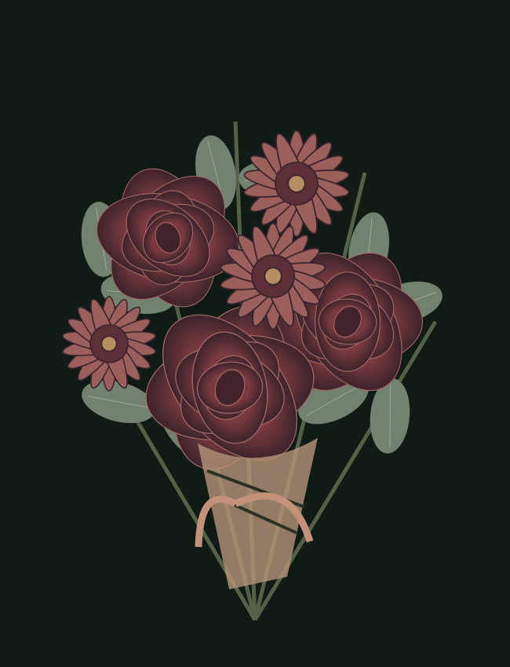

After Hours
£65Burgundy rose, dahlia, eucalyptus. Rich, untamed and quietly dramatic.
Hand-tied arrangements, seasonal wedding flowers, and same-day London delivery — made by hand, never from a catalogue.
SEASONAL STEMS. SINGULAR STORIES.
Hand-tied. Seasonal. Entirely yours.
from £45 ↗Choose a palette. Leave room for nature.
Stems vary with the market.
Burgundy rose, dahlia, eucalyptus. Rich, untamed and quietly dramatic.
A lighter seasonal hand-tie. Soft forms with room to breathe.
Warm autumn tones with sculptural foliage and generous movement.
Ceremony, reception, bridal party.
A shared visual language, never a package.
Find a mood and a palette, or tell us what you have in mind.
Seasonal materials, shaped with care. Each arrangement has its own character.
Same-day delivery is part of the concept, subject to postcode and the 11am cutoff.
“No warehouse.
No batch production.
Just flowers,
cut fresh.”
Bloom Studio is a fictional independent floral design studio in London. The idea is simple: let seasonal flowers speak, then find the shape that lets you hear them.
Every arrangement is imagined for its moment, with considered sourcing and recyclable wrapping as the ambition. The studio, delivery service and sourcing claims are a design concept, not a verified operating business.
From bouquets to full venue styling — a conversation about atmosphere, place and the feeling you want to remember.
Simple habits for cut flowers. Individual stems and dried materials have different needs.
Remove wrapping, use a clean vase, trim stems at an angle and remove leaves below the water line.
Refresh water regularly and keep flowers away from direct heat, bright sun and ripening fruit. Use flower food as directed.
Some flowers are toxic to pets. Keep arrangements out of reach and ask a real florist about specific stems. Seasonal substitutions may change the composition.
Local arrangement planner. Add, remove and review a selection before checking the concept delivery area.
No checkout, payment, stock or fulfilment service is connected. All choices clear on reload.
Your selection is empty. Choose a seasonal arrangement.
No flowers ordered.